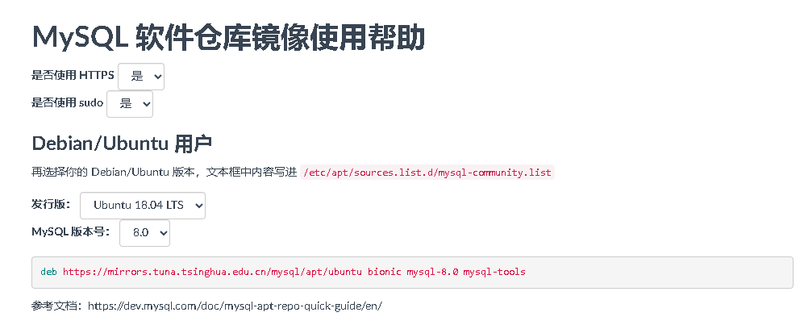

前期准备工作
- 下载ssh远程连接工具
- 云服务器更改密码
- 远程服务器使用此账号密码登录（默认不是root账密）
- 进入界面后输入
sudo passwd更改root密码，连续输入两次回车即可不建议远程连接的账密为
root账密，因为root权限过大，容易造成服务器被入侵
云服务器为腾讯云，操作系统版本为Ubuntu18.04
服务器相关配置
这里我是切换了root用户，后续操作都在root下进行，如果未切换，则在前面加入sudo
更换国内镜像
- 备份源列表
/etc/apt/sources.listcp /etc/apt/sources.list /etc/apt/sources.list_backup - 打开
sources.list文件vim /etc/apt/sources.list - 添加目标源的配置文件，最后保存即可，可将原本的源注释或删除
# 默认注释了源码镜像以提高 apt update 速度，如有需要可自行取消注释 deb https://mirrors.tuna.tsinghua.edu.cn/ubuntu/ xenial main restricted universe multiverse # deb-src https://mirrors.tuna.tsinghua.edu.cn/ubuntu/ xenial main restricted universe multiverse deb https://mirrors.tuna.tsinghua.edu.cn/ubuntu/ xenial-updates main restricted universe multiverse # deb-src https://mirrors.tuna.tsinghua.edu.cn/ubuntu/ xenial-updates main restricted universe multiverse deb https://mirrors.tuna.tsinghua.edu.cn/ubuntu/ xenial-backports main restricted universe multiverse # deb-src https://mirrors.tuna.tsinghua.edu.cn/ubuntu/ xenial-backports main restricted universe multiverse deb https://mirrors.tuna.tsinghua.edu.cn/ubuntu/ xenial-security main restricted universe multiverse # deb-src https://mirrors.tuna.tsinghua.edu.cn/ubuntu/ xenial-security main restricted universe multiverse - 最后更新源
apt-get update安装rpm
这个包是用来检查是否安装软件apt install rpm
mysql安装及配置
查看是否已经安装Mysql
rpm -qa | grep mysql
如果检查出来有东西，可以使用下面命令将其删除
rpm -e xxx
配置mysql源
首先我们的源是清华源，所以我们需要在清华开源软件镜像站中找到对应mysql的源
打开此链接

根据自己操纵系统版本确定镜像，复制并添加到/etc/apt/sources.list.d/mysql-community.list
注意运行
apt update
安装mysql
运行以下命令安装mysql
apt install mysql-server
之后会弹出输入root密码，随便输入即可
测试安装结果
输入下列命令，其中-p后面跟着的是刚才设置的密码
mysql -u root -p123456
见到以下界面则表明安装成功

远程连接mysql
这里我使用的是navicat

输入需要的参数，可以看到这里的端口是3306，那么我们需要打开服务器的3306端口，以便能够通过此端口连接到数据库
云服务器端口配置
登录云服务器控制台，找到防火墙，点击添加规则

输入端口号，其他默认不动，然后点击确定

当然，服务器端口放开了，我们还需要对mysql的账号密码进行配置，这样才能通过远程登录mysql
mysql账号密码配置
- 输入命令在ssh中登录mysql
mysql -u root -p - 输入密码，进入mysql
- 输入命令选择mysql数据库
use mysql; - 输入命令查看root账号远程登录权限
select user,host from user;

我这里是已经更改，如果root的host为localhost，那么表示只能本地登录，如果为%，那么可以远程
- 输入命令
grant all privileges on *.* to 'root'@'%' identified by '123456' with grant option; - 输入命令刷新权限
flush privileges; - 输入命令退出mysql
exit; - 重启mysql
service mysql restart
修改mysql配置文件
输入命令查看3306端口访问权限
netstat -apn | grep 3306

可以看到这里是127.0.0.1:3306，那么表明3306只能本地访问，那么我们修改/etc/mysql/mysql.conf.d/mysqld.cnf文件，将bind-address修改为0.0.0.0

修改完成后重启服务
service mysql restart
这里远程登陆的密码为
grant all privileges on *.* to 'root'@'%' identified by '123456' with grant option;中by之后跟的，我这里是123456